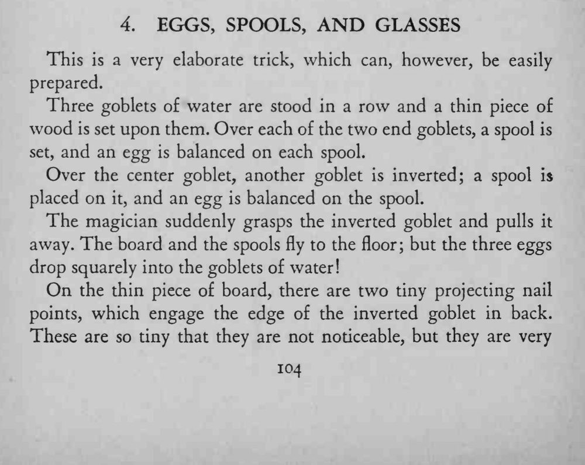
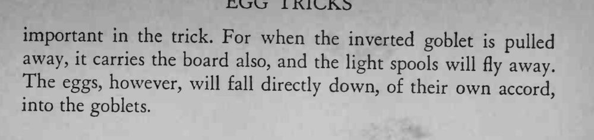

三只水杯排成一排，木板上立着线轴与鸡蛋；魔术师猛然抽走中间的倒扣杯，木板和线轴飞落，三枚鸡蛋却刚好落进三杯水里。
两个钉尖要小到看不出来，却能吃住倒扣杯的边；抽杯时要直、要快。


This is a very elaborate trick, which can, however, be easily prepared. Three goblets of water are stood in a row and a thin piece of wood is set upon them. Over each of the two end goblets, a spool is set, and an egg is balanced on each spool. Over the center goblet, another goblet is inverted; a spool is placed on it, and an egg is balanced on the spool. The magician suddenly grasps the inverted goblet and pulls it away. The board and the spools fly to the floor; but the three eggs drop squarely into the goblets of water! On the thin piece of board, there are two tiny projecting nail points, which engage the edge of the inverted goblet in back. These are so tiny that they are not noticeable, but they are very important in the trick. For when the inverted goblet pulled away, it carries the board also, and the light spools will fly away. The eggs, however, will fall directly down, of their own accord, into the goblets.